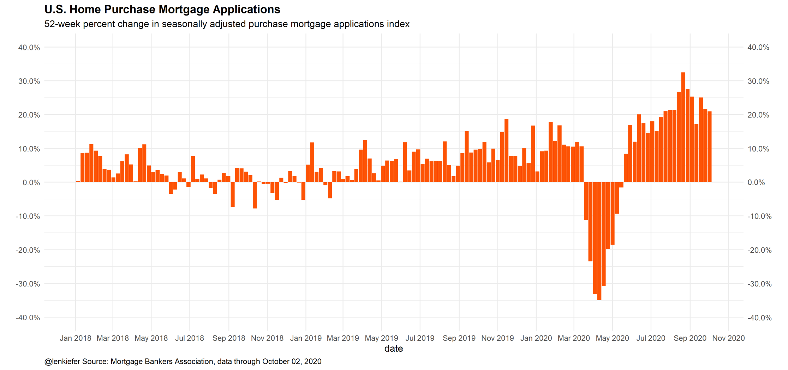
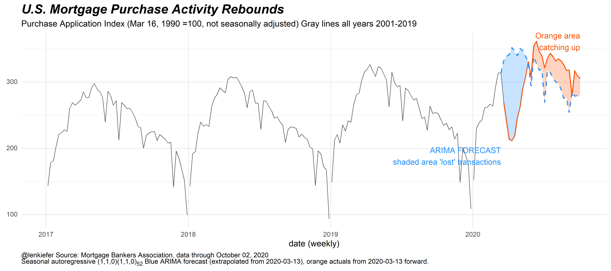
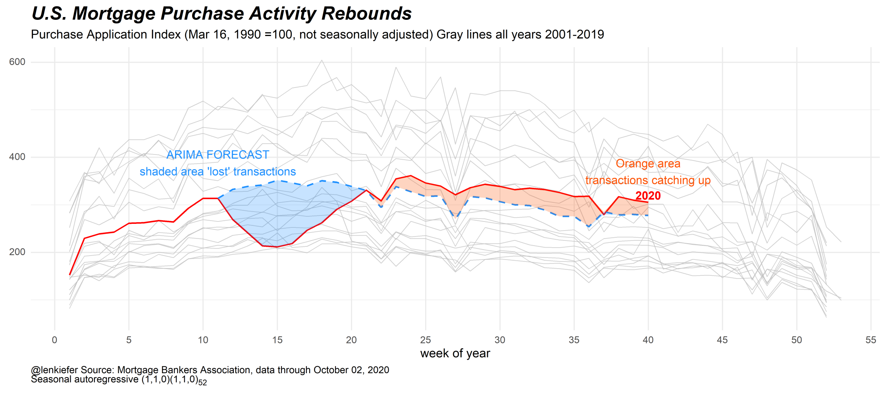
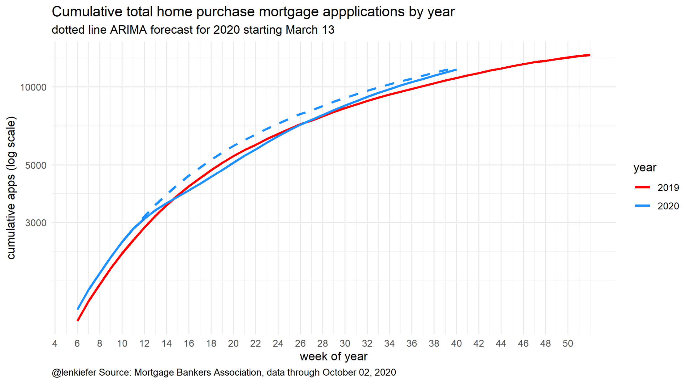

Every week I track a lot of data. One useful source is the Mortgage Bankers Association Weekly Applications Survey. This survey provides a timely, high frequency (weekly) reading on the U.S. mortgage market. Most weeks I make a bunch of charts related to the release, often posting them on Twitter:
Here's how I've been interpreting the hot recent housing market data. Still a lot of catch up from a lost spring.
— 📈 Len Kiefer 📊 (@lenkiefer) October 7, 2020
The blue lake in the chart below is the spring shortfall based on the pre-pandemic trend.
The orange slice is the catch up since mid summer... pic.twitter.com/y9NspVHA7E
Earlier this week on LinkedIn I posted a short article describing in more detail than what I can explain in tweets. That article is reposted below.
US housing makes up for a lost spring
This morning the Mortgage Bankers Association reported their latest Weekly Applications Survey, which showed that home purchase mortgage applications are up about 20% from a year ago. Home purchase mortgage applications have been running hot since mid-summer, partially due to historically low mortgage rates, partially due to underlying strength in the housing market, and partially due to catch up for a lost spring.

A useful question is to think back before the pandemic and ask where we thought home purchase demand might have been and compare it to what we’ve seen since. So I fired up my super computer and ran a time series model (an ARIMA(1,1,0)(1,1,0)52 if you’re curious) to extrapolate forward mortgage applications from March 13, 2020. Mid-March 2020 was when the US economy started to experience the major impact of the Coronavirus pandemic.
Consider the chart below. The black line is the non seasonally adjusted home purchase mortgage applications index. You can clearly see the typical seasonal pattern in the data. The jagged edges represent holidays (Memorial Day, 4th of July, Labor Day, Thanksgiving, etc) when application activity typically slows. There’s also an upward trend of around 10% a year each year (compare the peaks 2017 to 2018 to 2019).
Then in 2020 the market was disrupted. Typically in spring applications rise, but the pandemic led to shutdowns and a sharp contraction in activity. The weekly applications since March 13th are represented in orange, while the pre-pandemic trend line is represented by the blue dotted line. The blue “lake” in the chart represents the transactions “lost” due to the pandemic.
Since about midsummer the orange line has been above the blue line, as the housing market makes up for a lost spring. The orange slice in the chart represents the weeks when applications were running above their pre-pandemic trend.

An alternative way to visualize the same data, is to put week on the x axis and plot an individual line for each year. It’s not as easy to compare individual years, but it does allow you to see where 2020 lies relative to prior years.

A natural question is whether or not the lake or the orange slice is bigger. Have we made up for the lost spring? The chart below helps us see that by comparing the cumulative applications in 2020 (solid blue line) against the pre-pandemic trend (dotted blue line). For reference I’ve also included 2019. The x axis is week of the year and the y axis is the cumulative sum of applications over the year.
The chart shows that at about the midpoint of the year, cumulative apps in 2020 fell to 2019 levels (after running about +10% year-over-year in the first quarter). Since midsummer when the housing market accelerated the blue solid line (representing 2020) rose back toward the dotted pre-pandemic trend. As of the first week of October, the pre-pandemic trend and the actual values line up. The orange slice is about equal to the lake.

Will the housing market maintain momentum? That’s hard to say. Low interest rates and a possible shift in preferences towards owned housing may support continued strength in the owned housing market. But the broader US economy still faces significant challenges (see for example Bill McBride/Calculated Risk on the latest US employment report). If the labor market continues to struggle and household incomes weaken as the fiscal support in 2020 fades, then the US housing market will have hard time maintaining its current momentum.